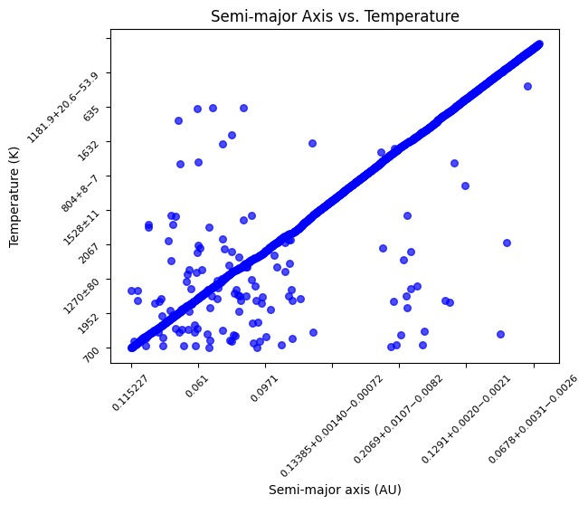

According to NASA, an exoplanet is any planet beyond our Solar System. Exoplanets orbit other stars, but there are also "rogue planets" which do not orbit any star. Some of these orbiting planets fall within the "habitable zone" of their host star, which is the distance from a star at which water on its liquid form could exist on the planet's surface.

This research and analysis is guided by the following question regarding exoplanets:
For this project this Kaggle dataset was used. The relevant variables provided by these dataset were:
This project follows an exploratory data analysis (EDA) approach using real exoplanet observational data. The dataset was downloaded directly from Kaggle and processed using Python scientific libraries. This work is intended as an exploratory data analysis (EDA) rather than a definitive classification of habitable exoplanets
The analysis workflow includes:
Due to the large number of missing values in several columns, the analysis focuses on exoplanets with available measurements of semi-major axis and temperature, which are key parameters for estimating habitability.
The dataset contains a significant number of missing values, particularly in planetary temperature and orbital parameters.
To ensure meaningful analysis, rows with missing values in the following variables were removed:
As a result, the analysis represents a subset of known exoplanets and should be interpreted as exploratory rather than exhaustive.
To address this research question we can visualize the characteristics that make exoplanets habitable using Python-based visualization libraries such as Matplotlib and Seaborn.
As a first step toward identifying potentially habitable exoplanets, we analyze the relationship between the semi-major axis of an exoplanet and its estimated temperature.
The semi-major axis represents the average distance between the planet and its host star, while temperature serves as a proxy for the energy received by the planet.
A random sample of 200 exoplanets was selected to improve visualization clarity and reduce overcrowding in the scatter plot.
To estimate whether a planet might be habitable we can use the semimajor axis of the planet―the distance from the center of the elliptical orbit of the planet to the farthest point on the perimeter of the orbit―and the host star's temperature. With these two variables we can use the concept of the habitable zone (HZ). The HZ is the range of distances from a star where a planet could have liquid water on its surface, given sufficient atmospheric pressure.
The scatter plot below shows the relationship between semi-major axis and planetary temperature. A general decreasing trend can be observed, consistent with basic physical expectations: planets closer to their host stars tend to exhibit higher temperatures. (Click on plot for interactivity)
Outliers may be explained by observational uncertainties, atmospheric effects, or limitations in the available temperature estimates.

This visualization was generated using Python (Matplotlib) and can be reproduced directly from the analysis notebook.
To estimate whether an exoplanet lies within the habitable zone of its host star, stellar luminosity must be calculated.
Stellar luminosity depends on the effective temperature of the star and its radius, according to the Stefan–Boltzmann law:
L = 4πR²σT⁴
Future steps of this project will incorporate stellar luminosity to estimate habitable zone boundaries and classify exoplanets accordingly.
This project is inspired by current research in exoplanet science, where computational methods and large astronomical datasets are essential for identifying trends and guiding future observations.
While this study does not confirm habitability, it demonstrates how scientific programming and data analysis can be used to explore astrophysical questions using real observational data.
All data processing, cleaning, and exploratory analysis were performed using Python and Jupyter Notebooks. The analysis was performed using pandas and NumPy for data handling, and Matplotlib/Seaborn for visualization